Contents
- Fully arborescent site
- Visualizing the adjacency matrix
- Computing the page rank
- Another configuration : siloing up to the home
- Visualizing the adjacency matrix
- Graph visualization
- Computing the page rank
- Another configuration : links every where up to the home : no siloing
- Visualizing the adjacency matrix
- Computing the page rank
- Another configuration : siloing up to the n-2
- Visualizing the adjacency matrix
- Computing the page rank
- Another configuration : links every where up to the n-2 : no siloing
- Visualizing the adjacency matrix
- Computing the page rank
- Another configuration : siloing up to the n-1
- Visualizing the adjacency matrix
- Computing the page rank
- Another configuration : links every where up to the n-1 : no siloing
- Visualizing the adjacency matrix
- Computing the page rank
Fully arborescent site
U={'home','meta_liste_produit1','meta_liste_produit2','liste_produit1','liste_produit2','liste_produit3','liste_produit4','fiche_produit1','fiche_produit2','fiche_produit3','fiche_produit4','fiche_produit5','fiche_produit6','fiche_produit7','fiche_produit8','fiche_produit9','fiche_produit10','fiche_produit11','fiche_produit12','fiche_produit13','fiche_produit14','fiche_produit15','fiche_produit16'};
coordinates = [...
0,0;...
-7,-2;...
7,-2;...
-10,-4;...
-4,-4;...
4,-4;...
10,-4;...
-13,-6;...
-12,-6;...
-8,-6;...
-7,-6;...
-6,-6;...
-5,-6;...
-3,-6;...
-2,-6;...
2,-6;...
3,-6;...
5,-6;...
6,-6;...
7,-6;...
8,-6;...
12,-6;...
13,-6;...
];
G=[...
1 1 1 0 0 0 0 0 0 0 0 0 0 0 0 0 0 0 0 0 0 0 0;...
0 0 0 1 1 0 0 0 0 0 0 0 0 0 0 0 0 0 0 0 0 0 0;...
0 0 0 0 0 1 1 0 0 0 0 0 0 0 0 0 0 0 0 0 0 0 0;...
0 0 0 0 0 0 0 1 1 1 1 0 0 0 0 0 0 0 0 0 0 0 0;...
0 0 0 0 0 0 0 0 0 0 0 1 1 1 1 0 0 0 0 0 0 0 0;...
0 0 0 0 0 0 0 0 0 0 0 0 0 0 0 1 1 1 1 0 0 0 0;...
0 0 0 0 0 0 0 0 0 0 0 0 0 0 0 0 0 0 0 1 1 1 1;...
0 0 0 0 0 0 0 0 0 0 0 0 0 0 0 0 0 0 0 0 0 0 0;...
0 0 0 0 0 0 0 0 0 0 0 0 0 0 0 0 0 0 0 0 0 0 0;...
0 0 0 0 0 0 0 0 0 0 0 0 0 0 0 0 0 0 0 0 0 0 0;...
0 0 0 0 0 0 0 0 0 0 0 0 0 0 0 0 0 0 0 0 0 0 0;...
0 0 0 0 0 0 0 0 0 0 0 0 0 0 0 0 0 0 0 0 0 0 0;...
0 0 0 0 0 0 0 0 0 0 0 0 0 0 0 0 0 0 0 0 0 0 0;...
0 0 0 0 0 0 0 0 0 0 0 0 0 0 0 0 0 0 0 0 0 0 0;...
0 0 0 0 0 0 0 0 0 0 0 0 0 0 0 0 0 0 0 0 0 0 0;...
0 0 0 0 0 0 0 0 0 0 0 0 0 0 0 0 0 0 0 0 0 0 0;...
0 0 0 0 0 0 0 0 0 0 0 0 0 0 0 0 0 0 0 0 0 0 0;...
0 0 0 0 0 0 0 0 0 0 0 0 0 0 0 0 0 0 0 0 0 0 0;...
0 0 0 0 0 0 0 0 0 0 0 0 0 0 0 0 0 0 0 0 0 0 0;...
0 0 0 0 0 0 0 0 0 0 0 0 0 0 0 0 0 0 0 0 0 0 0;...
0 0 0 0 0 0 0 0 0 0 0 0 0 0 0 0 0 0 0 0 0 0 0;...
0 0 0 0 0 0 0 0 0 0 0 0 0 0 0 0 0 0 0 0 0 0 0;...
0 0 0 0 0 0 0 0 0 0 0 0 0 0 0 0 0 0 0 0 0 0 0;...
];
Visualizing the adjacency matrix
figure; spy(G) title('Visualizing the adjacency matrix') figure; gplot(G,coordinates) title('Graph layout') figure; gObj = biograph(G,U) % The |view| method lays out the graph and displays it in a figure. gObj = view(gObj);
Warning: Self connecting nodes are not allowed, ignoring the diagonal of CM. Biograph object with 23 nodes and 22 edges.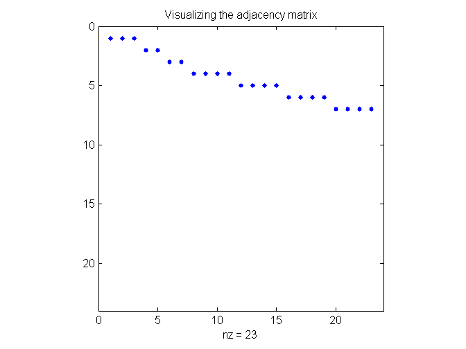 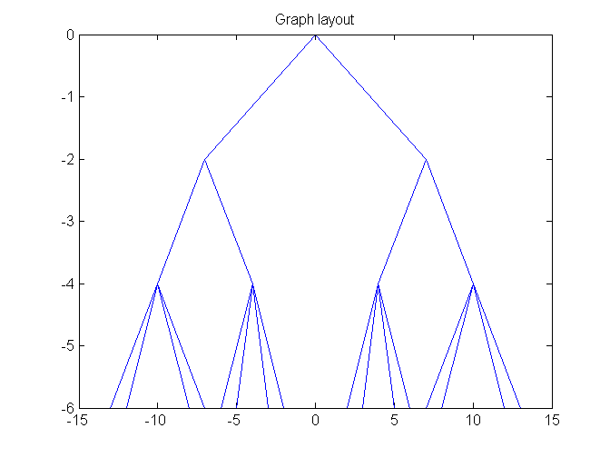 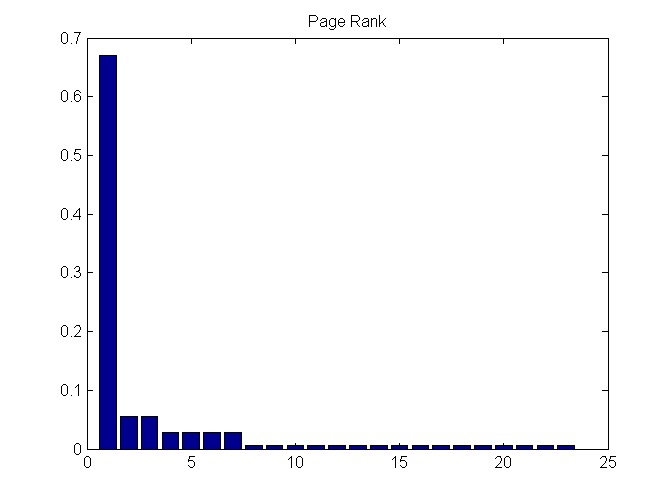 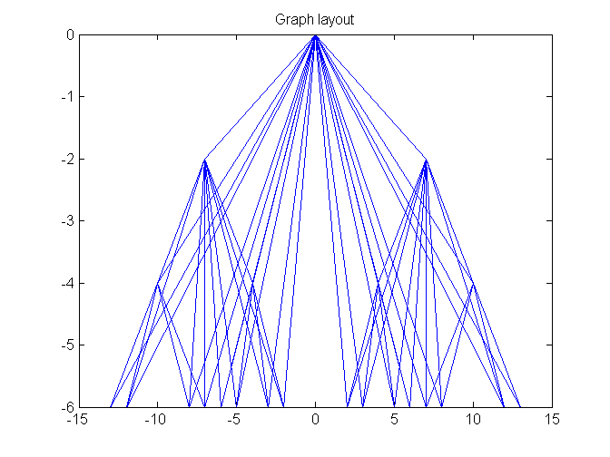
Computing the page rank
%pagerank;
pagerankbis(U,G);
page-rank in out url 1 0.2337 2 0 home 2 0.1285 2 1 meta_liste_produit1 3 0.1285 2 1 meta_liste_produit2 4 0.0667 4 1 liste_produit1 5 0.0667 4 1 liste_produit2 6 0.0667 4 1 liste_produit3 7 0.0667 4 1 liste_produit4 8 0.0152 0 1 fiche_produit1 9 0.0152 0 1 fiche_produit2 10 0.0152 0 1 fiche_produit3 11 0.0152 0 1 fiche_produit4 12 0.0152 0 1 fiche_produit5 13 0.0152 0 1 fiche_produit6 14 0.0152 0 1 fiche_produit7 15 0.0152 0 1 fiche_produit8 16 0.0152 0 1 fiche_produit9 17 0.0152 0 1 fiche_produit10 18 0.0152 0 1 fiche_produit11 19 0.0152 0 1 fiche_produit12 20 0.0152 0 1 fiche_produit13 21 0.0152 0 1 fiche_produit14 22 0.0152 0 1 fiche_produit15 23 0.0152 0 1 fiche_produit16
Another configuration : siloing up to the home
G=[... 1 1 1 0 0 0 0 0 0 0 0 0 0 0 0 0 0 0 0 0 0 0 0;... 1 0 0 1 1 0 0 0 0 0 0 0 0 0 0 0 0 0 0 0 0 0 0;... 1 0 0 0 0 1 1 0 0 0 0 0 0 0 0 0 0 0 0 0 0 0 0;... 1 1 0 0 0 0 0 1 1 1 1 0 0 0 0 0 0 0 0 0 0 0 0;... 1 1 0 0 0 0 0 0 0 0 0 1 1 1 1 0 0 0 0 0 0 0 0;... 1 0 1 0 0 0 0 0 0 0 0 0 0 0 0 1 1 1 1 0 0 0 0;... 1 0 1 0 0 0 0 0 0 0 0 0 0 0 0 0 0 0 0 1 1 1 1;... 1 1 0 1 0 0 0 0 0 0 0 0 0 0 0 0 0 0 0 0 0 0 0;... 1 1 0 1 0 0 0 0 0 0 0 0 0 0 0 0 0 0 0 0 0 0 0;... 1 1 0 1 0 0 0 0 0 0 0 0 0 0 0 0 0 0 0 0 0 0 0;... 1 1 0 1 0 0 0 0 0 0 0 0 0 0 0 0 0 0 0 0 0 0 0;... 1 1 0 0 1 0 0 0 0 0 0 0 0 0 0 0 0 0 0 0 0 0 0;... 1 1 0 0 1 0 0 0 0 0 0 0 0 0 0 0 0 0 0 0 0 0 0;... 1 1 0 0 1 0 0 0 0 0 0 0 0 0 0 0 0 0 0 0 0 0 0;... 1 1 0 0 1 0 0 0 0 0 0 0 0 0 0 0 0 0 0 0 0 0 0;... 1 0 1 0 0 1 0 0 0 0 0 0 0 0 0 0 0 0 0 0 0 0 0;... 1 0 1 0 0 1 0 0 0 0 0 0 0 0 0 0 0 0 0 0 0 0 0;... 1 0 1 0 0 1 0 0 0 0 0 0 0 0 0 0 0 0 0 0 0 0 0;... 1 0 1 0 0 1 0 0 0 0 0 0 0 0 0 0 0 0 0 0 0 0 0;... 1 0 1 0 0 0 1 0 0 0 0 0 0 0 0 0 0 0 0 0 0 0 0;... 1 0 1 0 0 0 1 0 0 0 0 0 0 0 0 0 0 0 0 0 0 0 0;... 1 0 1 0 0 0 1 0 0 0 0 0 0 0 0 0 0 0 0 0 0 0 0;... 1 0 1 0 0 0 1 0 0 0 0 0 0 0 0 0 0 0 0 0 0 0 0;... ];
Visualizing the adjacency matrix
figure; spy(G) title('Visualizing the adjacency matrix') figure; gplot(G,coordinates) title('Graph layout') figure; gObj = biograph(G,U) % The |view| method lays out the graph and displays it in a figure. gObj = view(gObj);
Warning: Self connecting nodes are not allowed, ignoring the diagonal of CM. Biograph object with 23 nodes and 80 edges.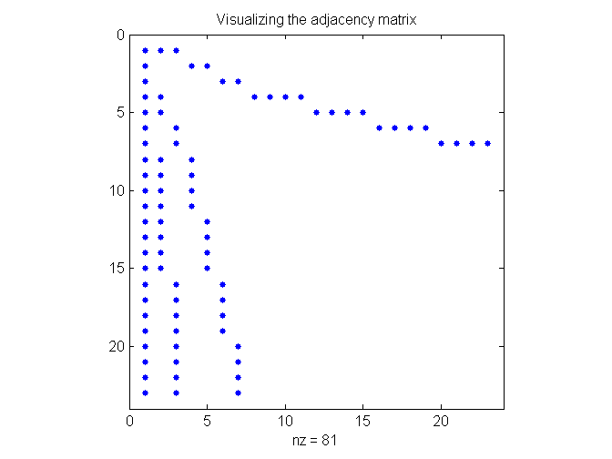 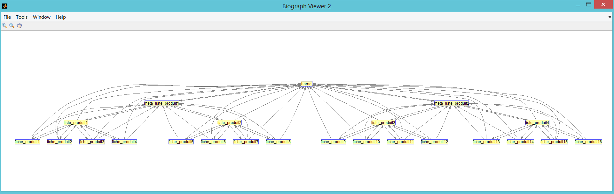
Graph visualization
This gives some indication of the number of edges of the graph and also shows that the graph is not symmetric and, hence, is a directed graph. However, it is difficult to visualize what is going on. The biograph object is another way of representing a graph.
Computing the page rank
%pagerank;
pagerankbis(U,G);
page-rank in out url 5 0.1089 6 5 liste_produit2 4 0.1089 6 5 liste_produit1 7 0.1089 6 5 liste_produit4 6 0.1089 6 5 liste_produit3 2 0.0440 3 11 meta_liste_produit1 3 0.0440 3 11 meta_liste_produit2 9 0.0289 3 1 fiche_produit2 15 0.0289 3 1 fiche_produit8 8 0.0289 3 1 fiche_produit1 10 0.0289 3 1 fiche_produit3 11 0.0289 3 1 fiche_produit4 12 0.0289 3 1 fiche_produit5 13 0.0289 3 1 fiche_produit6 14 0.0289 3 1 fiche_produit7 19 0.0289 3 1 fiche_produit12 20 0.0289 3 1 fiche_produit13 21 0.0289 3 1 fiche_produit14 22 0.0289 3 1 fiche_produit15 23 0.0289 3 1 fiche_produit16 16 0.0289 3 1 fiche_produit9 17 0.0289 3 1 fiche_produit10 18 0.0289 3 1 fiche_produit11 1 0.0133 2 22 home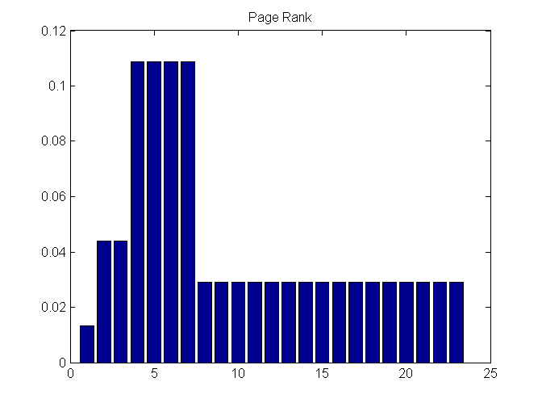
Another configuration : links every where up to the home : no siloing
G=[... 1 1 1 0 0 0 0 0 0 0 0 0 0 0 0 0 0 0 0 0 0 0 0;... 1 0 0 1 1 0 0 0 0 0 0 0 0 0 0 0 0 0 0 0 0 0 0;... 1 0 0 0 0 1 1 0 0 0 0 0 0 0 0 0 0 0 0 0 0 0 0;... 1 1 1 0 0 0 0 1 1 1 1 0 0 0 0 0 0 0 0 0 0 0 0;... 1 1 1 0 0 0 0 0 0 0 0 1 1 1 1 0 0 0 0 0 0 0 0;... 1 1 1 0 0 0 0 0 0 0 0 0 0 0 0 1 1 1 1 0 0 0 0;... 1 1 1 0 0 0 0 0 0 0 0 0 0 0 0 0 0 0 0 1 1 1 1;... 1 1 1 1 1 1 1 0 0 0 0 0 0 0 0 0 0 0 0 0 0 0 0;... 1 1 1 1 1 1 1 0 0 0 0 0 0 0 0 0 0 0 0 0 0 0 0;... 1 1 1 1 1 1 1 0 0 0 0 0 0 0 0 0 0 0 0 0 0 0 0;... 1 1 1 1 1 1 1 0 0 0 0 0 0 0 0 0 0 0 0 0 0 0 0;... 1 1 1 1 1 1 1 0 0 0 0 0 0 0 0 0 0 0 0 0 0 0 0;... 1 1 1 1 1 1 1 0 0 0 0 0 0 0 0 0 0 0 0 0 0 0 0;... 1 1 1 1 1 1 1 0 0 0 0 0 0 0 0 0 0 0 0 0 0 0 0;... 1 1 1 1 1 1 1 0 0 0 0 0 0 0 0 0 0 0 0 0 0 0 0;... 1 1 1 1 1 1 1 0 0 0 0 0 0 0 0 0 0 0 0 0 0 0 0;... 1 1 1 1 1 1 1 0 0 0 0 0 0 0 0 0 0 0 0 0 0 0 0;... 1 1 1 1 1 1 1 0 0 0 0 0 0 0 0 0 0 0 0 0 0 0 0;... 1 1 1 1 1 1 1 0 0 0 0 0 0 0 0 0 0 0 0 0 0 0 0;... 1 1 1 1 1 1 1 0 0 0 0 0 0 0 0 0 0 0 0 0 0 0 0;... 1 1 1 1 1 1 1 0 0 0 0 0 0 0 0 0 0 0 0 0 0 0 0;... 1 1 1 1 1 1 1 0 0 0 0 0 0 0 0 0 0 0 0 0 0 0 0;... 1 1 1 1 1 1 1 0 0 0 0 0 0 0 0 0 0 0 0 0 0 0 0;... ];
Visualizing the adjacency matrix
figure; spy(G) title('Visualizing the adjacency matrix') gplot(G,coordinates) title('Graph layout') figure; gObj = biograph(G,U) % The |view| method lays out the graph and displays it in a figure. gObj = view(gObj);
Warning: Self connecting nodes are not allowed, ignoring the diagonal of CM. Biograph object with 23 nodes and 148 edges.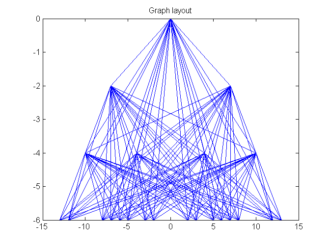 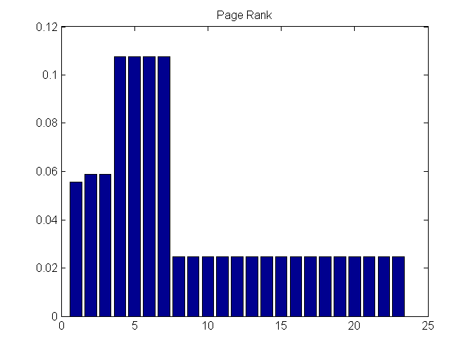
Computing the page rank
%pagerank;
pagerankbis(U,G);
page-rank in out url 7 0.1142 7 17 liste_produit4 4 0.1142 7 17 liste_produit1 5 0.1142 7 17 liste_produit2 6 0.1142 7 17 liste_produit3 10 0.0312 7 1 fiche_produit3 8 0.0312 7 1 fiche_produit1 9 0.0312 7 1 fiche_produit2 11 0.0312 7 1 fiche_produit4 12 0.0312 7 1 fiche_produit5 14 0.0312 7 1 fiche_produit7 15 0.0312 7 1 fiche_produit8 17 0.0312 7 1 fiche_produit10 18 0.0312 7 1 fiche_produit11 20 0.0312 7 1 fiche_produit13 21 0.0312 7 1 fiche_produit14 22 0.0312 7 1 fiche_produit15 13 0.0312 7 1 fiche_produit6 19 0.0312 7 1 fiche_produit12 23 0.0312 7 1 fiche_produit16 16 0.0312 7 1 fiche_produit9 2 0.0183 3 21 meta_liste_produit1 3 0.0183 3 21 meta_liste_produit2 1 0.0080 2 22 home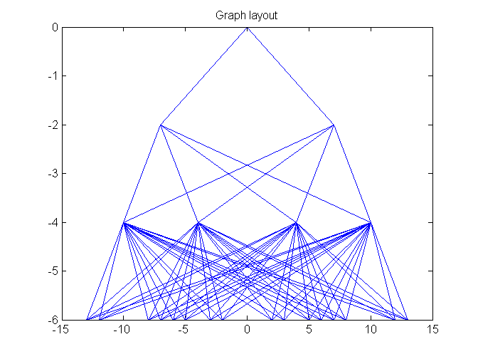
Another configuration : siloing up to the n-2
G=[... 1 1 1 0 0 0 0 0 0 0 0 0 0 0 0 0 0 0 0 0 0 0 0;... 1 0 0 1 1 0 0 0 0 0 0 0 0 0 0 0 0 0 0 0 0 0 0;... 1 0 0 0 0 1 1 0 0 0 0 0 0 0 0 0 0 0 0 0 0 0 0;... 1 1 0 0 0 0 0 1 1 1 1 0 0 0 0 0 0 0 0 0 0 0 0;... 1 1 0 0 0 0 0 0 0 0 0 1 1 1 1 0 0 0 0 0 0 0 0;... 1 0 1 0 0 0 0 0 0 0 0 0 0 0 0 1 1 1 1 0 0 0 0;... 1 0 1 0 0 0 0 0 0 0 0 0 0 0 0 0 0 0 0 1 1 1 1;... 0 1 0 1 0 0 0 0 0 0 0 0 0 0 0 0 0 0 0 0 0 0 0;... 0 1 0 1 0 0 0 0 0 0 0 0 0 0 0 0 0 0 0 0 0 0 0;... 0 1 0 1 0 0 0 0 0 0 0 0 0 0 0 0 0 0 0 0 0 0 0;... 0 1 0 1 0 0 0 0 0 0 0 0 0 0 0 0 0 0 0 0 0 0 0;... 0 1 0 0 1 0 0 0 0 0 0 0 0 0 0 0 0 0 0 0 0 0 0;... 0 1 0 0 1 0 0 0 0 0 0 0 0 0 0 0 0 0 0 0 0 0 0;... 0 1 0 0 1 0 0 0 0 0 0 0 0 0 0 0 0 0 0 0 0 0 0;... 0 1 0 0 1 0 0 0 0 0 0 0 0 0 0 0 0 0 0 0 0 0 0;... 0 0 1 0 0 1 0 0 0 0 0 0 0 0 0 0 0 0 0 0 0 0 0;... 0 0 1 0 0 1 0 0 0 0 0 0 0 0 0 0 0 0 0 0 0 0 0;... 0 0 1 0 0 1 0 0 0 0 0 0 0 0 0 0 0 0 0 0 0 0 0;... 0 0 1 0 0 1 0 0 0 0 0 0 0 0 0 0 0 0 0 0 0 0 0;... 0 0 1 0 0 0 1 0 0 0 0 0 0 0 0 0 0 0 0 0 0 0 0;... 0 0 1 0 0 0 1 0 0 0 0 0 0 0 0 0 0 0 0 0 0 0 0;... 0 0 1 0 0 0 1 0 0 0 0 0 0 0 0 0 0 0 0 0 0 0 0;... 0 0 1 0 0 0 1 0 0 0 0 0 0 0 0 0 0 0 0 0 0 0 0;... ];
Visualizing the adjacency matrix
figure; spy(G) title('Visualizing the adjacency matrix') gplot(G,coordinates) title('Graph layout') figure; gObj = biograph(G,U) % The |view| method lays out the graph and displays it in a figure. gObj = view(gObj);
Warning: Self connecting nodes are not allowed, ignoring the diagonal of CM. Biograph object with 23 nodes and 64 edges.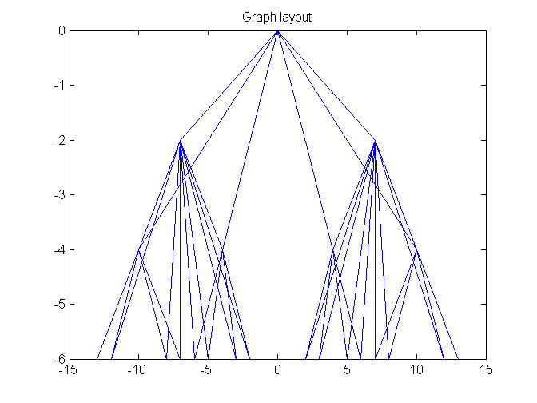 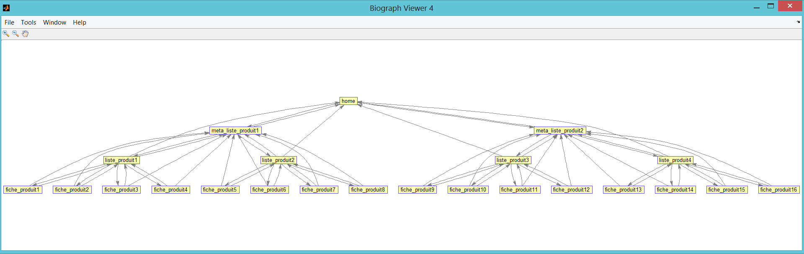
Computing the page rank
%pagerank;
pagerankbis(U,G);
page-rank in out url 6 0.1093 6 5 liste_produit3 7 0.1093 6 5 liste_produit4 5 0.1093 6 5 liste_produit2 4 0.1093 6 5 liste_produit1 3 0.0456 3 11 meta_liste_produit2 2 0.0456 3 11 meta_liste_produit1 15 0.0286 2 1 fiche_produit8 12 0.0286 2 1 fiche_produit5 20 0.0286 2 1 fiche_produit13 21 0.0286 2 1 fiche_produit14 22 0.0286 2 1 fiche_produit15 23 0.0286 2 1 fiche_produit16 13 0.0286 2 1 fiche_produit6 14 0.0286 2 1 fiche_produit7 17 0.0286 2 1 fiche_produit10 18 0.0286 2 1 fiche_produit11 19 0.0286 2 1 fiche_produit12 16 0.0286 2 1 fiche_produit9 9 0.0286 2 1 fiche_produit2 10 0.0286 2 1 fiche_produit3 8 0.0286 2 1 fiche_produit1 11 0.0286 2 1 fiche_produit4 1 0.0136 2 6 home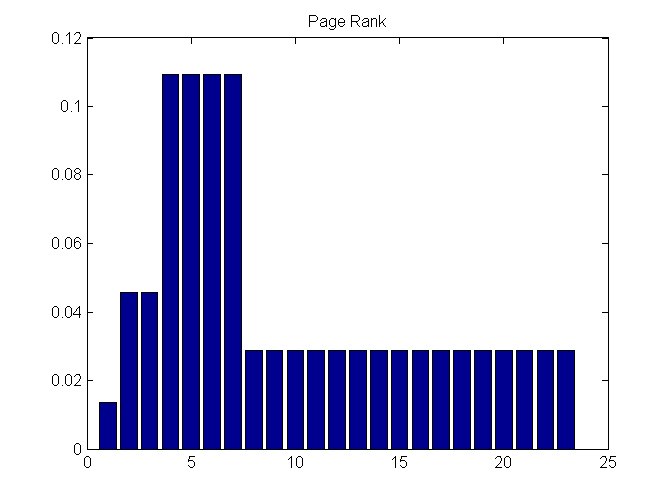
Another configuration : links every where up to the n-2 : no siloing
G=[... 1 1 1 0 0 0 0 0 0 0 0 0 0 0 0 0 0 0 0 0 0 0 0;... 1 0 0 1 1 0 0 0 0 0 0 0 0 0 0 0 0 0 0 0 0 0 0;... 1 0 0 0 0 1 1 0 0 0 0 0 0 0 0 0 0 0 0 0 0 0 0;... 1 1 1 0 0 0 0 1 1 1 1 0 0 0 0 0 0 0 0 0 0 0 0;... 1 1 1 0 0 0 0 0 0 0 0 1 1 1 1 0 0 0 0 0 0 0 0;... 1 1 1 0 0 0 0 0 0 0 0 0 0 0 0 1 1 1 1 0 0 0 0;... 1 1 1 0 0 0 0 0 0 0 0 0 0 0 0 0 0 0 0 1 1 1 1;... 0 1 1 1 1 1 1 0 0 0 0 0 0 0 0 0 0 0 0 0 0 0 0;... 0 1 1 1 1 1 1 0 0 0 0 0 0 0 0 0 0 0 0 0 0 0 0;... 0 1 1 1 1 1 1 0 0 0 0 0 0 0 0 0 0 0 0 0 0 0 0;... 0 1 1 1 1 1 1 0 0 0 0 0 0 0 0 0 0 0 0 0 0 0 0;... 0 1 1 1 1 1 1 0 0 0 0 0 0 0 0 0 0 0 0 0 0 0 0;... 0 1 1 1 1 1 1 0 0 0 0 0 0 0 0 0 0 0 0 0 0 0 0;... 0 1 1 1 1 1 1 0 0 0 0 0 0 0 0 0 0 0 0 0 0 0 0;... 0 1 1 1 1 1 1 0 0 0 0 0 0 0 0 0 0 0 0 0 0 0 0;... 0 1 1 1 1 1 1 0 0 0 0 0 0 0 0 0 0 0 0 0 0 0 0;... 0 1 1 1 1 1 1 0 0 0 0 0 0 0 0 0 0 0 0 0 0 0 0;... 0 1 1 1 1 1 1 0 0 0 0 0 0 0 0 0 0 0 0 0 0 0 0;... 0 1 1 1 1 1 1 0 0 0 0 0 0 0 0 0 0 0 0 0 0 0 0;... 0 1 1 1 1 1 1 0 0 0 0 0 0 0 0 0 0 0 0 0 0 0 0;... 0 1 1 1 1 1 1 0 0 0 0 0 0 0 0 0 0 0 0 0 0 0 0;... 0 1 1 1 1 1 1 0 0 0 0 0 0 0 0 0 0 0 0 0 0 0 0;... 0 1 1 1 1 1 1 0 0 0 0 0 0 0 0 0 0 0 0 0 0 0 0;... ];
Visualizing the adjacency matrix
figure; spy(G) title('Visualizing the adjacency matrix') gplot(G,coordinates) title('Graph layout') figure; gObj = biograph(G,U) % The |view| method lays out the graph and displays it in a figure. gObj = view(gObj);
Warning: Self connecting nodes are not allowed, ignoring the diagonal of CM. Biograph object with 23 nodes and 132 edges.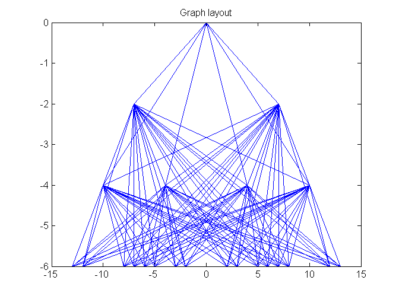 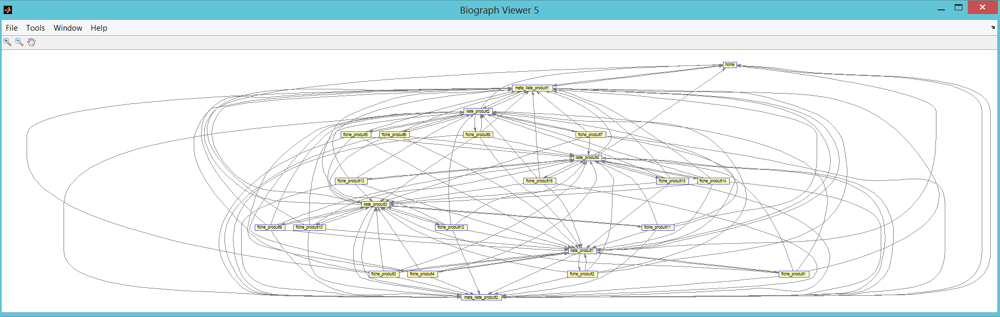
Computing the page rank
%pagerank;
pagerankbis(U,G);
page-rank in out url 7 0.1145 7 17 liste_produit4 5 0.1145 7 17 liste_produit2 4 0.1145 7 17 liste_produit1 6 0.1145 7 17 liste_produit3 9 0.0310 6 1 fiche_produit2 8 0.0310 6 1 fiche_produit1 11 0.0310 6 1 fiche_produit4 12 0.0310 6 1 fiche_produit5 15 0.0310 6 1 fiche_produit8 16 0.0310 6 1 fiche_produit9 17 0.0310 6 1 fiche_produit10 20 0.0310 6 1 fiche_produit13 21 0.0310 6 1 fiche_produit14 22 0.0310 6 1 fiche_produit15 10 0.0310 6 1 fiche_produit3 13 0.0310 6 1 fiche_produit6 14 0.0310 6 1 fiche_produit7 18 0.0310 6 1 fiche_produit11 19 0.0310 6 1 fiche_produit12 23 0.0310 6 1 fiche_produit16 2 0.0191 3 21 meta_liste_produit1 3 0.0191 3 21 meta_liste_produit2 1 0.0081 2 6 home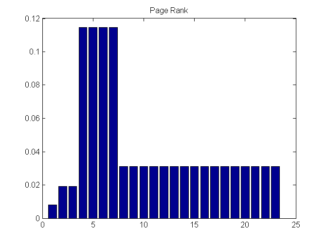
Another configuration : siloing up to the n-1
G=[... 1 1 1 0 0 0 0 0 0 0 0 0 0 0 0 0 0 0 0 0 0 0 0;... 1 0 0 1 1 0 0 0 0 0 0 0 0 0 0 0 0 0 0 0 0 0 0;... 1 0 0 0 0 1 1 0 0 0 0 0 0 0 0 0 0 0 0 0 0 0 0;... 0 1 0 0 0 0 0 1 1 1 1 0 0 0 0 0 0 0 0 0 0 0 0;... 0 1 0 0 0 0 0 0 0 0 0 1 1 1 1 0 0 0 0 0 0 0 0;... 0 0 1 0 0 0 0 0 0 0 0 0 0 0 0 1 1 1 1 0 0 0 0;... 0 0 1 0 0 0 0 0 0 0 0 0 0 0 0 0 0 0 0 1 1 1 1;... 0 0 0 1 0 0 0 0 0 0 0 0 0 0 0 0 0 0 0 0 0 0 0;... 0 0 0 1 0 0 0 0 0 0 0 0 0 0 0 0 0 0 0 0 0 0 0;... 0 0 0 1 0 0 0 0 0 0 0 0 0 0 0 0 0 0 0 0 0 0 0;... 0 0 0 1 0 0 0 0 0 0 0 0 0 0 0 0 0 0 0 0 0 0 0;... 0 0 0 0 1 0 0 0 0 0 0 0 0 0 0 0 0 0 0 0 0 0 0;... 0 0 0 0 1 0 0 0 0 0 0 0 0 0 0 0 0 0 0 0 0 0 0;... 0 0 0 0 1 0 0 0 0 0 0 0 0 0 0 0 0 0 0 0 0 0 0;... 0 0 0 0 1 0 0 0 0 0 0 0 0 0 0 0 0 0 0 0 0 0 0;... 0 0 0 0 0 1 0 0 0 0 0 0 0 0 0 0 0 0 0 0 0 0 0;... 0 0 0 0 0 1 0 0 0 0 0 0 0 0 0 0 0 0 0 0 0 0 0;... 0 0 0 0 0 1 0 0 0 0 0 0 0 0 0 0 0 0 0 0 0 0 0;... 0 0 0 0 0 1 0 0 0 0 0 0 0 0 0 0 0 0 0 0 0 0 0;... 0 0 0 0 0 0 1 0 0 0 0 0 0 0 0 0 0 0 0 0 0 0 0;... 0 0 0 0 0 0 1 0 0 0 0 0 0 0 0 0 0 0 0 0 0 0 0;... 0 0 0 0 0 0 1 0 0 0 0 0 0 0 0 0 0 0 0 0 0 0 0;... 0 0 0 0 0 0 1 0 0 0 0 0 0 0 0 0 0 0 0 0 0 0 0;... ];
Visualizing the adjacency matrix
figure; spy(G) title('Visualizing the adjacency matrix') gplot(G,coordinates) title('Graph layout') figure; gObj = biograph(G,U) % The |view| method lays out the graph and displays it in a figure. gObj = view(gObj);
Warning: Self connecting nodes are not allowed, ignoring the diagonal of CM. Biograph object with 23 nodes and 44 edges.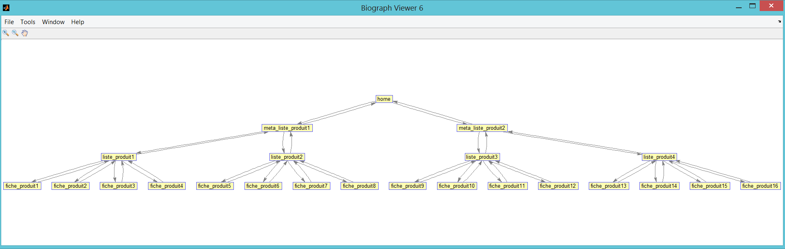
Computing the page rank
%pagerank;
pagerankbis(U,G);
page-rank in out url 4 0.1090 5 5 liste_produit1 6 0.1090 5 5 liste_produit3 5 0.1090 5 5 liste_produit2 7 0.1090 5 5 liste_produit4 2 0.0611 3 3 meta_liste_produit1 3 0.0611 3 3 meta_liste_produit2 1 0.0411 2 2 home 11 0.0251 1 1 fiche_produit4 9 0.0251 1 1 fiche_produit2 10 0.0251 1 1 fiche_produit3 8 0.0251 1 1 fiche_produit1 12 0.0251 1 1 fiche_produit5 13 0.0251 1 1 fiche_produit6 23 0.0251 1 1 fiche_produit16 15 0.0251 1 1 fiche_produit8 17 0.0251 1 1 fiche_produit10 18 0.0251 1 1 fiche_produit11 19 0.0251 1 1 fiche_produit12 22 0.0251 1 1 fiche_produit15 14 0.0251 1 1 fiche_produit7 20 0.0251 1 1 fiche_produit13 21 0.0251 1 1 fiche_produit14 16 0.0251 1 1 fiche_produit9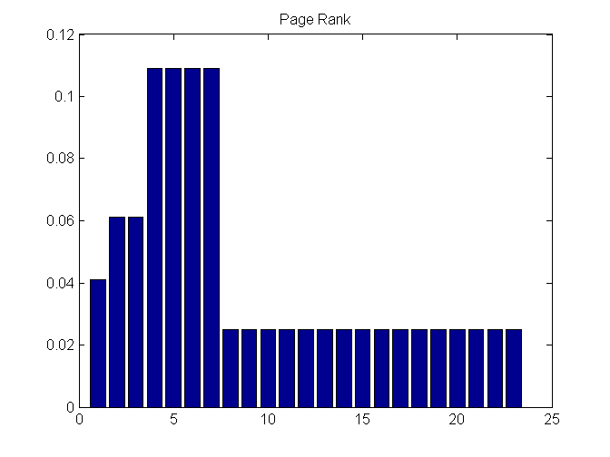
Another configuration : links every where up to the n-1 : no siloing
G=[... 1 1 1 0 0 0 0 0 0 0 0 0 0 0 0 0 0 0 0 0 0 0 0;... 1 0 0 1 1 0 0 0 0 0 0 0 0 0 0 0 0 0 0 0 0 0 0;... 1 0 0 0 0 1 1 0 0 0 0 0 0 0 0 0 0 0 0 0 0 0 0;... 0 1 1 0 0 0 0 1 1 1 1 0 0 0 0 0 0 0 0 0 0 0 0;... 0 1 1 0 0 0 0 0 0 0 0 1 1 1 1 0 0 0 0 0 0 0 0;... 0 1 1 0 0 0 0 0 0 0 0 0 0 0 0 1 1 1 1 0 0 0 0;... 0 1 1 0 0 0 0 0 0 0 0 0 0 0 0 0 0 0 0 1 1 1 1;... 0 0 0 1 1 1 1 0 0 0 0 0 0 0 0 0 0 0 0 0 0 0 0;... 0 0 0 1 1 1 1 0 0 0 0 0 0 0 0 0 0 0 0 0 0 0 0;... 0 0 0 1 1 1 1 0 0 0 0 0 0 0 0 0 0 0 0 0 0 0 0;... 0 0 0 1 1 1 1 0 0 0 0 0 0 0 0 0 0 0 0 0 0 0 0;... 0 0 0 1 1 1 1 0 0 0 0 0 0 0 0 0 0 0 0 0 0 0 0;... 0 0 0 1 1 1 1 0 0 0 0 0 0 0 0 0 0 0 0 0 0 0 0;... 0 0 0 1 1 1 1 0 0 0 0 0 0 0 0 0 0 0 0 0 0 0 0;... 0 0 0 1 1 1 1 0 0 0 0 0 0 0 0 0 0 0 0 0 0 0 0;... 0 0 0 1 1 1 1 0 0 0 0 0 0 0 0 0 0 0 0 0 0 0 0;... 0 0 0 1 1 1 1 0 0 0 0 0 0 0 0 0 0 0 0 0 0 0 0;... 0 0 0 1 1 1 1 0 0 0 0 0 0 0 0 0 0 0 0 0 0 0 0;... 0 0 0 1 1 1 1 0 0 0 0 0 0 0 0 0 0 0 0 0 0 0 0;... 0 0 0 1 1 1 1 0 0 0 0 0 0 0 0 0 0 0 0 0 0 0 0;... 0 0 0 1 1 1 1 0 0 0 0 0 0 0 0 0 0 0 0 0 0 0 0;... 0 0 0 1 1 1 1 0 0 0 0 0 0 0 0 0 0 0 0 0 0 0 0;... 0 0 0 1 1 1 1 0 0 0 0 0 0 0 0 0 0 0 0 0 0 0 0;... ];
Visualizing the adjacency matrix
figure; spy(G) title('Visualizing the adjacency matrix') gplot(G,coordinates) title('Graph layout') figure; gObj = biograph(G,U) % The |view| method lays out the graph and displays it in a figure. gObj = view(gObj);
Warning: Self connecting nodes are not allowed, ignoring the diagonal of CM. Biograph object with 23 nodes and 96 edges.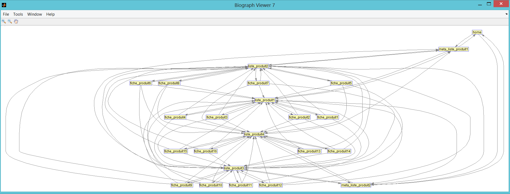
Computing the page rank
%pagerank;
pagerankbis(U,G);
page-rank in out url 6 0.1156 6 17 liste_produit3 5 0.1156 6 17 liste_produit2 4 0.1156 6 17 liste_produit1 7 0.1156 6 17 liste_produit4 10 0.0296 4 1 fiche_produit3 12 0.0296 4 1 fiche_produit5 15 0.0296 4 1 fiche_produit8 13 0.0296 4 1 fiche_produit6 14 0.0296 4 1 fiche_produit7 16 0.0296 4 1 fiche_produit9 17 0.0296 4 1 fiche_produit10 19 0.0296 4 1 fiche_produit12 20 0.0296 4 1 fiche_produit13 23 0.0296 4 1 fiche_produit16 8 0.0296 4 1 fiche_produit1 9 0.0296 4 1 fiche_produit2 11 0.0296 4 1 fiche_produit4 18 0.0296 4 1 fiche_produit11 21 0.0296 4 1 fiche_produit14 22 0.0296 4 1 fiche_produit15 2 0.0244 3 5 meta_liste_produit1 3 0.0244 3 5 meta_liste_produit2 1 0.0148 2 2 home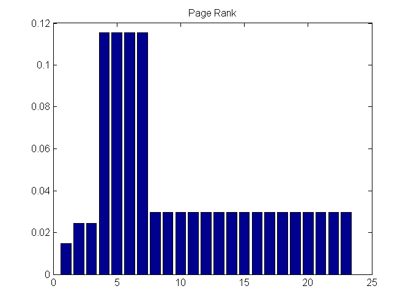